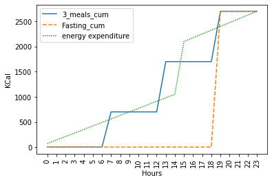

import pandas as pd
import matplotlib.pyplot as plt
import seaborn as snsSecret weightloss myths hucksters do not want you to know
In today’s fast-paced world, everyone is looking for a quick fix to their weight problems. The weight loss market in the U.S. is valued at $72.6 billion1, and as a result, it’s no surprise that many scammers infiltrated this space in an attempt to make a quick buck off of other people’s misery.
Undoubtedly, losing weight is a complicated endeavor and many people struggle with it, especially in light of the recent pandemic. It can be hard to separate the truth from the lies and the genuine products from the frauds. In this blog post, I’ll be sharing my personal experiences and providing a mechanism to filter out the frauds immediately.
Please note that the information in this post is based on my personal interest and experience in the topic and should be taken at your own risk. I’ve researched nutrition for building muscle to get stronger and then losing fat to run faster for more than 10 years, and I want to share what I’ve learned along the way.
Myth 1: Calories do not matter.
Forget about all emotions, all real-life stress. Imagine you are a biological robot. It is trivial to make this imaginary human lose weight. There is no woo-woo magic needed. If this robot stops eating it will automatically lose weight until it dies. Mathematically, this is the easiest way to lose weight. Many people try this method but fortunately get stopped by their hunger.
We define energy balance at time \(t\) as follows: \[b^t = c^t_{in} - c^t_{out}\]
In our example we set \(c^t_{in}\) to zero for all \(t\) and because our energy expenditure as humans \(c^t_{out}\) is always greater than zero we have a negative balance and we lose weight over time.
Food is transformed to energy
No matter what you eat, the body is a complex mechanism transforming everything we eat into energy, (kcal). That is, if you eat something at time \(t\), \(c^t_{in}\), will be positive. If you eat an apple at time \(t\) \(c^t_{in}\) will be approximately 80kcal.
Consequences
How much energy the robot takes in over time is the only important factor for weight loss/weight gain. In the example below, we consider two different human robots eating different diets but with the exact same energy expenditure. Note that after the day, both people end up maintaining their weight since their energy intake is the same.
df = pd.DataFrame(
{
'3_meals' : [0] * 7 + [700] + 5*[0] + [1000] + [0] * 5 + [1000] + 4*[0],
'fasting' : [0] * 19 + [2700] + [0] * 4,
'c_out' : [70] * 15 + [1050] + [75] * 8,
}
).assign(**{
'3_meals_cum' : lambda x: x['3_meals'].cumsum(),
'Fasting_cum' : lambda x: x['fasting'].cumsum(),
'energy expenditure' : lambda x: x['c_out'].cumsum()
})
fig, ax = plt.subplots()
sns.lineplot(
data=df[['3_meals_cum', 'Fasting_cum', 'energy expenditure']], ax=ax)
xticks = list(range(0, len(df)))
ax.set_ylabel("KCal")
ax.set_xticks(xticks)
ax.set_xticklabels(xticks, rotation=90)
ax.set_xlabel("Hours")
plt.show()